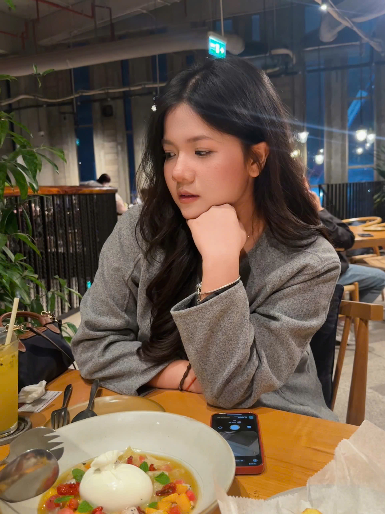
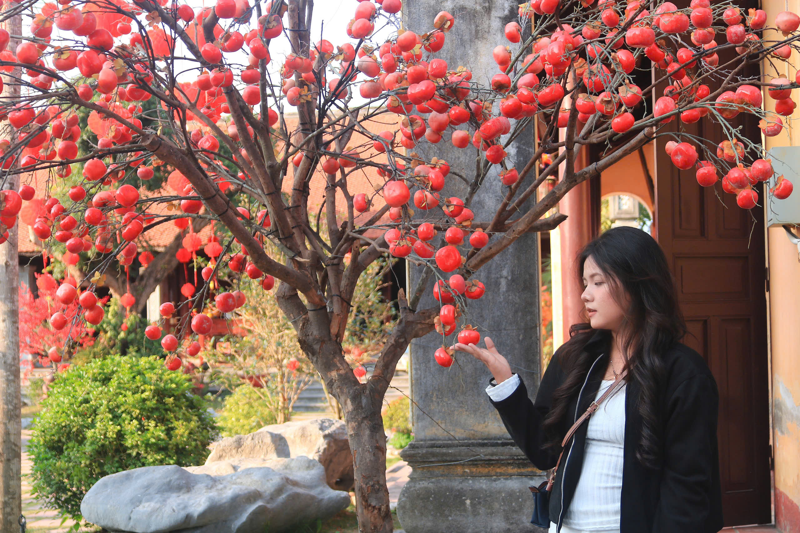

A Sophomore | Foreign Trade University (FTU) | Lifelong Learner


I am a second-year student at Foreign Trade University in Hanoi, currently majoring in International Business Administration (BA).
I am passionate about learning languages, socializing with people, and traveling to new places. One of my goals is to explore all major attractions in Vietnam.
I am continuously improving my English proficiency, planning to learn additional languages such as Chinese or Spanish, and aiming to gain real-world experience in the business sector in the future.
Head of Human Resources
Media Collaborator
DAL Language Center – Hai Phong | 2024 – Present
Ms. Hoàng Yến Language Center – Hanoi | 2025 – Present
Freelance | 2024 – Present
Currently expanding my knowledge and practical experience to pursue an internship in the business and economics field, where I can apply analytical, communication, and organizational skills in a professional environment.
Beyond academics and professional development, I have a strong interest in music and creative culture.
I am inspired by HIEUTHUHAI (I'M A SUNDAY), especially his mindset: "Ai cũng phải bắt đầu từ đâu đó".
"Ai cũng phải bắt đầu từ đâu đó"
This quote reminds me that every achievement starts from small beginnings. It motivates me to move forward no matter how challenging the journey may be.
Email: dxthuyy2852006@gmail.com
Phone: (+84) 398394821
Location: Hanoi, Vietnam